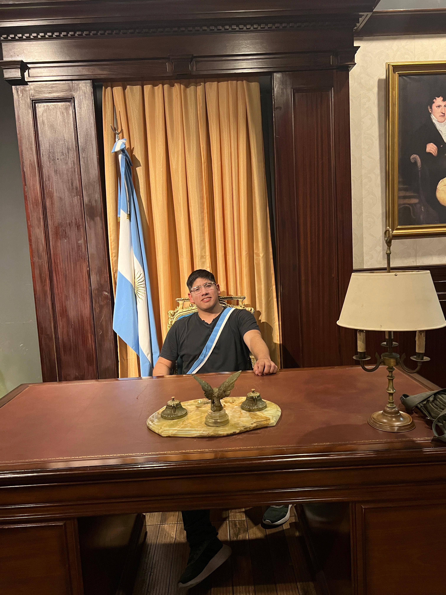

Soy alumno de la carrera Desarrollo Web que se dicta en el CURZA.
Busco aprender y aplicar nuevos conocimientos para mejorar mis habilidades en desarrollo web.
Mi objetivo es desarrollarme profesionalmente en el ámbito de la programación.
Experiencia en desarrollo de sitios web y aplicaciones educativas. Conocimiento en HTML, CSS, y JavaScript.
¿Cuál es la relación entre el software libre y la educación?
La libertad del software asume un rol de fundamental importancia en el ámbito educativo...